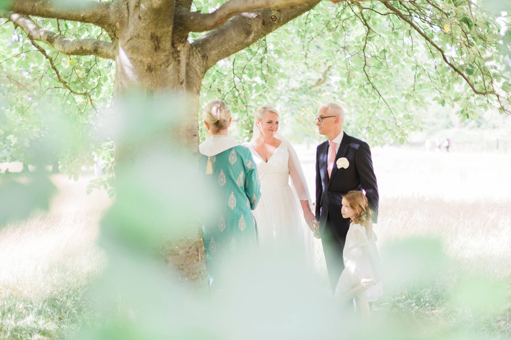

Weddings
London Wedding Photography at the Morton's Club
7 August 2015

Last month I had the pleasure of photographing the gorgeous wedding of two lovebirds who have been together for over 15 years, and in that time have built a beautiful and loving family around themselves. It has been so refreshing getting to know these two and hearing the stories about how their love has developed and has grown over time.
While passing years and the challenges of raising a family can sometimes stress a relationship to a breaking point, for these two the bond has only gotten stronger and the fact that they are getting married now–after so much time together, two children, a dog and several homes– is a true testament to their love!
And I have to say, it was such a treat as their wedding photographer. The ceremony took place in my absolute favorite church in London — St. Mary Abbot’s in Kensington where I was also lucky enough to shoot a baptism some time ago. The church service was then followed by spiritual ceremony in Hyde Park under the privacy of a maple tree and surrounded by the love of their two daughters.
A reception at the Morton’s club in Mayfair finished the night off and had everyone laughing and dancing with delight. Anyway, enjoy the images! And thank you so much to my lovely second shooter Slawa Walczak.
To book your wedding photography in London with me, please call me at 07462907790 or send me an email at amy@fantonphotography.com . I’m look forward to hearing from you :) xx